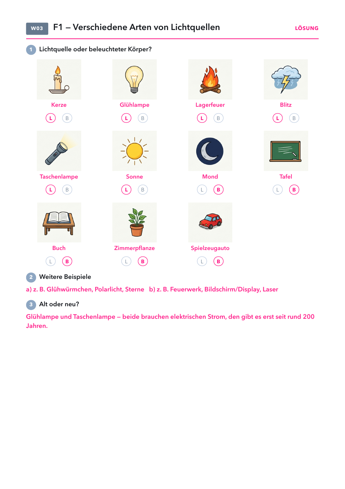
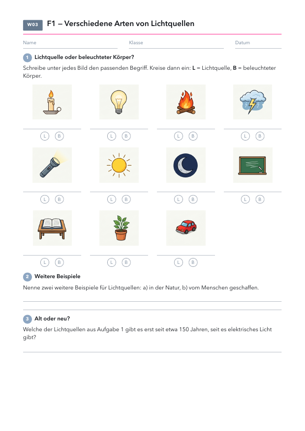
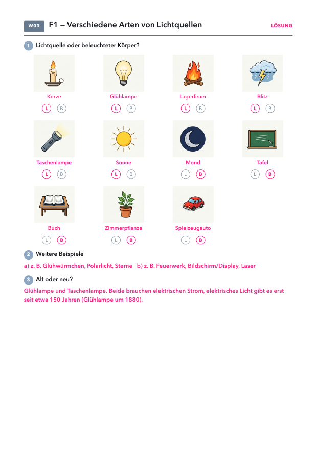

- Arbeitsblatt Lichtquellen: Seite 1, eins pro Schüler.
- Folien und Lösungen: nicht drucken.
Material
Demo (für dich)
| Material | Anzahl | Hinweis |
|---|---|---|
| Glühlampe mit Fassung | 1× | für den Licht-an/Licht-aus-Impuls |
| zwei unterschiedlich schwere Bälle | 2 | Einstieg naturwissenschaftliche Arbeitsweise, Fallversuch |
Schülerversuch (pro Gruppe)
| Material | Anzahl | Hinweis |
|---|---|---|
| nicht nötig | ||
Raum verdunkeln, nur die Lampe vorne an. Das Arbeitsblatt Lichtquellen braucht kein Material.
Die Stunde
1 · Arbeitsweise
2 · Einstieg Optik
3 · Wie sehen wir?
4 · Lichtquellen
5 · Üben
1
Arbeitsweise
Zwei Bälle fallen lassen: vermuten, beobachten, erklären. So arbeiten wir ab jetzt immer.
Zwei Bälle fallen lassen: vermuten, beobachten, erklären. So arbeiten wir ab jetzt immer.
2
Einstieg Optik
Licht an, Licht aus. Leitfrage 1, Vermutungen.
Licht an, Licht aus. Leitfrage 1, Vermutungen.
4
Lichtquellen
Selbstleuchtend oder beleuchtet, natürlich oder künstlich.
Selbstleuchtend oder beleuchtet, natürlich oder künstlich.
5
Üben
Arbeitsblatt Lichtquellen.
Arbeitsblatt Lichtquellen.
Labore zur Stunde: 🧪 Sehlabor
Folie 1
OptikWelcher der beiden Bälle landet zuerst?
Zwei unterschiedlich schwere Bälle fallen aus gleicher Höhe gleichzeitig los.
Physik 7 · Optik · Warum sehen wir überhaupt etwas?1
Folie 2
OptikNaturwissenschaftliche Arbeitsweise

Physik 7 · Optik · Warum sehen wir überhaupt etwas?2
Folie 3
OptikNaturwissenschaftliche Arbeitsweise
Beobachtung
Zwei unterschiedlich schwere Bälle fallen aus gleicher Höhe gleichzeitig los.
Frage
Kommt der schwerere Ball zuerst unten an?
Vermutung
Die meisten vermuten: Der schwerere Ball fällt schneller.
Versuch
Beide Bälle gleichzeitig loslassen und genau hinschauen/hinhören.
Erklärung
Beide Bälle kommen gleichzeitig an. Die Schwerkraft beschleunigt alle Körper gleich schnell — unabhängig vom Gewicht. So hat schon Galileo Galilei vor rund 400 Jahren die naturwissenschaftliche Arbeitsweise begründet.
Physik 7 · Optik · Warum sehen wir überhaupt etwas?3
Folie 4
OptikDas machen wir ab jetzt immer so
Bei jedem Versuch in diesem Schuljahr gehen wir gleich vor: Wir beobachten, stellen eine Frage,
äußern eine Vermutung, überprüfen sie im Versuch und formulieren am Ende eine Erklärung.
Physik 7 · Optik · Warum sehen wir überhaupt etwas?4
Folie 5
Optik | Licht und Sehen
Physik 7 · Optik · Warum sehen wir überhaupt etwas?5
Folie 6
OptikWas ändert sich, wenn die Lampe eingeschaltet wird?
Im abgedunkelten Raum: Was ändert sich, wenn die Lampe eingeschaltet wird?
Physik 7 · Optik · Warum sehen wir überhaupt etwas?6
Folie 7
Leitfrage 1
Warum sehen wir überhaupt etwas?
Was vermutest du? Wir sammeln eure Vermutungen.
Physik 7 · Optik · Warum sehen wir überhaupt etwas?7
Folie 8
Optik · Leitfrage 11.1 Wie sehen wir?
Wir sehen einen Gegenstand nur, wenn Licht von ihm in unser Auge gelangt.
Die Lichtquelle ist der Sender, das Auge der Empfänger.
🧪 Labor: Sehlabor
Physik 7 · Optik · Warum sehen wir überhaupt etwas?8
Folie 9
Optik · Leitfrage 11.2 Lichtquellen und beleuchtete Körper
Lichtquellen senden selbst Licht aus (Selbstleuchter).
Beleuchtete Körper senden nur Licht aus, das sie von einer Lichtquelle bekommen haben.
Physik 7 · Optik · Warum sehen wir überhaupt etwas?9
Folie 10 · Schülerblatt mit Lösung
📄 Arbeitsblatt austeilen

So steht es am Ende der Stunde im Heft: Überschriften abschreiben, Zeichnungen abzeichnen, Merksätze abschreiben, die Antwort auf die Leitfrage. Beobachte-, Alltags- und Check-Folien kommen nicht ins Heft. „Fortsetzung“ heißt: im Heft ohne neue Überschrift weiterschreiben.
Datum: __________
Leitfrage 1Warum sehen wir überhaupt etwas?
1.1 Wie sehen wir?
Wir sehen einen Gegenstand nur, wenn Licht von ihm in unser Auge gelangt.
Die Lichtquelle ist der Sender, das Auge der Empfänger.
🧪 Labor: Sehlabor, auch zu Hause über IServ
1.2 Lichtquellen und beleuchtete Körper
Lichtquellen senden selbst Licht aus (Selbstleuchter).
Beleuchtete Körper senden nur Licht aus, das sie von einer Lichtquelle bekommen haben.
Worauf du achten kannst
- Der Mond wird für eine Lichtquelle gehalten, weil er hell aussieht.
- Hell wird mit selbstleuchtend verwechselt: Ein weißes Blatt oder ein Spiegel wirkt hell, erzeugt aber kein Licht.
- Rückstrahler und Katzenaugen „leuchten“ nur, wenn sie angestrahlt werden. Das Wort „leuchten“ ruhig hinterfragen.
- Manche Kinder denken noch, das Auge sende etwas aus. Kurz zurückführen auf „Licht muss ins Auge gelangen“.
Denkfragen für das Gespräch
- Im dunklen Zimmer machst du das Licht aus. Warum siehst du plötzlich nichts mehr, obwohl alle Möbel noch da sind?
- Ein Radfahrer trägt eine Stirnlampe und eine Warnweste. Was davon ist Lichtquelle, was beleuchteter Körper?
- Kann ein Körper gleichzeitig Lichtquelle und beleuchteter Körper sein? (Beispiel: ein Bildschirm, der angestrahlt wird.)
Sehlabor
Labor öffnenAlle LaboreSender und Empfänger, Lichtquellen zuordnen, Sehen und gesehen werden auf der Straße. Auch für zu Hause über IServ.
Frühere Fassung
ALLES-Datei öffnen Dort stehen Verlauf mit Minuten, Merkheft, Aufgaben aus dem Buch und Lösungen.
Arbeitsblatt Lichtquellen
PDF öffnenDie Lösung steht auf Folie 10 im ausgefüllten Blatt.

